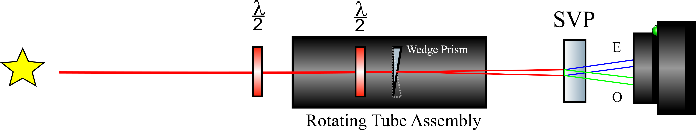

{kind=link}
{kind=link}
About
Hi there! My name is Shishir, and I'm a fan of all things astrophysics. My research mainly focuses on detecting and characterizing exoplanets with space telescopes. I also enjoy making sciencey things, playing badminton, and astrophotography.
The basics of polarimetry and our attempt to construct a small yet precise polarimeter.
On a distant world, light glints off a vast ocean, all but drowned out by the light of the host star. Elsewhere, light scatters off the sky of a rocky planet. Above the extreme surface of a neutron star spinning at unimaginable speeds, photons escape intense gravity as magnetic fields twist and turn on the surface. How can we uncover what’s going on here?
Astronomers are light-starved creatures. They scrutinize every last photon trickling down from the stars from every perspective possible. By now, astronomers are adept at leveraging the brightness (photometry), color (spectroscopy) and source (astrometry and imaging) of light. But there is one property of light that is rarely talked about in astronomy: polarization. Light is a wave, and the orientation of the “waving” of light governs its polarization. Light can be unpolarized if there is no preferential direction of the “waving” or polarized if there is. When light passes through a magnetic field, is scattered by particles in an atmosphere, or reflects off a surface, its polarization state can alter. Studying the polarization of light is therefore a powerful tool to learn about magnetic fields and pick out light that might be reflected or scattered by something.
Polarimetry fascinated me because it is an entirely different dimension to analyze the sky from -- one that is not used in astronomy nearly as much as the others. One reason could be that unlike the other properties of light listed above, our eyes are simply not sensitive to polarization (although praying mantis’ eyes are!) so we have been biased into studying the sky the way our limited eyes view it. The major reason is probably that ground-based polarimetry presents major challenges that are difficult to overcome. The sky is heavily polarized itself, which can obscure the polarization signals of the stars if you’re not careful. As with any other ground based technique, the atmosphere blurs the light from the star. The effect of this, however, is even more pernicious when you are trying to detect a signal that constitutes one part in ten million or even billions -- as with many of the situations I mentioned earlier. Despite this, several polarimeters have been constructed on some of the biggest telescopes in the world and have made important breakthroughs.
However, polarimeters are still very unavailable to small telescopes, and almost none are designed to study how polarization varies with time for light for the brightest and closest stars in the night sky. By looking for changes, I wanted to study phenomena that vary over short timescales -- things like twisting magnetic fields, exoplanets, binary stars, and objects that rotate rapidly. I also knew that while the giant observatories of the world sometimes had polarimeters, the technique and instrumentation was still practically nonexistent for smaller telescopes. Only a few high precision, time series polarimeters exist and they are all relegated to telescopes where observing time is a precious commodity. This is unsuitable for exploration.
I wanted to design a small polarimeter to mount on widely available < 1m telescopes (conveniently, I happen to have some of these). Ideally, I also wanted it to be able to make polarization measurements unobscured by the sky’s polarization and faster than the atmosphere could blur them into oblivion. The latter, particularly, is a lofty goal because it entails measurements faster than a hundred times per second. (to be continued)
